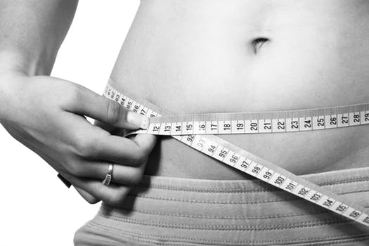
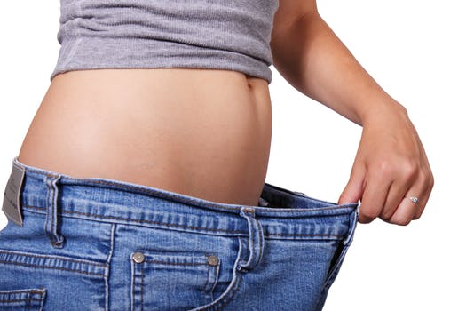
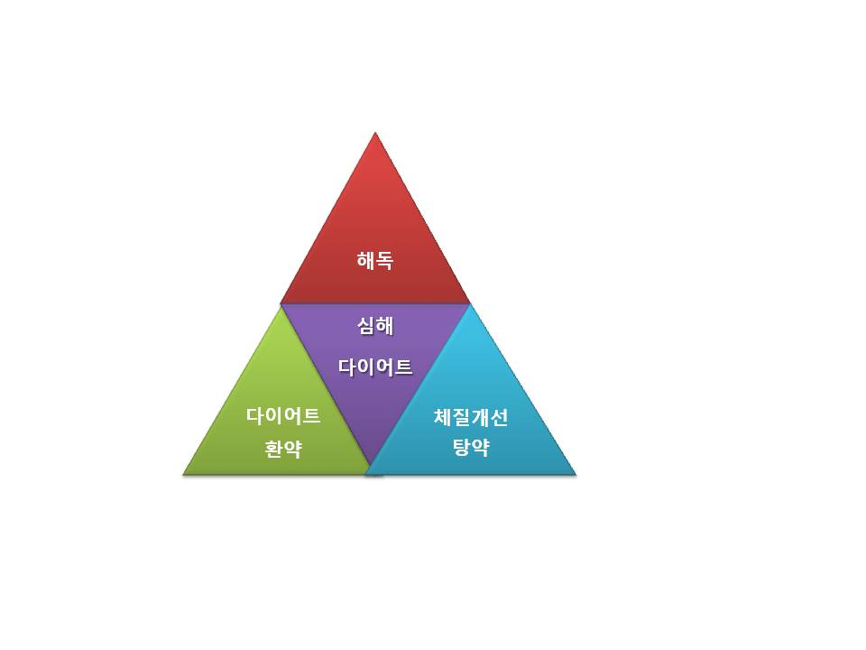

광안동의보감한의원
광안동의보감한의원광안동의보감한의원 다이어트 치료
비만은 습관의 병입니다. 다이어트는 이 습관을 변화시키는 것이 기본이며 최소 3개월 이상 꾸준히 실시해야 합니다. 살이 찌는 습관을 살이 안찌는 습관으로, 그리고 다시 건강하게 사는 습관으로 바꾸는 것입니다. 수 만가지의 다이어트 방법이 있고 지금도 속속 개발되고 있습니다. 그 말은 곧 다이어트에 왕도는 없다는 말입니다. 결국 적게 먹고 많이 움직이는 것이 가장 핵심이며 이 습관은 곧 건강 장수로 이어집니다.
광안동의보감한의원 다이어트는 제대로 된 식사(定食)하는 습관을 만들어 드립니다.
- 식사는 양보다는 미식(味食)을 즐기시면서 소식(小食)을 하시면 됩니다.
- 아침, 점심은 드시고 기존의 식사량의 1/2정도 드십시오.
- 기름진식사, 인스턴트, 지방질이 많은 육류는 피해주십시요.
- 체질개선과 더불어 소식하는 좋은 습관을 길러주며, 동시에 요요현상예방까지 하게 됩니다.
- 저녁에는 되도록 해독선식을 드시면서 장과 간을 쉬게하시는 것이 다이어트와 해독에 도움이 됩니다.
- 탕약은 약간 미지근하게 드시면 되며 여름철에는 차게 드셔도 좋습니다. 혹시 저녁약속이 있으시게 되면 우선은 한약을 먼저 드시어, 외식에서의 과식을 줄이십시오.
- 공복감이 심하실 땐 오이, 토마토 등은 조금 드십시오. 단, 가능하면 물도 적게 드시고, 과자, 간식류, 밀가루음식은 꼭 피하시는 것이 좋습니다.
지방세포는 50배까지 팽창되는 경우가 있습니다. 물만 먹어도 살이 안 빠지는 분은 물을 적게 먹어야 합니다. 본인 스스로 시험 후 물을 먹어도 살이 잘 빠질 경우엔 물을 먹는 것이 좋습니다. 갈증해소엔 얼음을 드셔서 갈증을 해소하시며, 입냄새가 날 땐 은단이나, 당분없는 껌등으로 입냄새를 해소시켜 주십시오.
시작후 수일간 두통, 불면증, 구역감, 아랫배의 통증, 가벼운 손떨림이 있을 수도 있지만 몇 일이 지나면 사라지게 되므로 걱정하지 마시고 복약을 진행하여 주십시오. 이 증상은 지방이 분해될 때 나오는 케톤체 때문입니다. 간혹 소변이 붉게 나오기도 하나 그때에는 물을 조금 더 드시면 괜찮습니다(혈뇨가 아닙니다). 증상이 심하거나 계속될 경우에는 문의해 주십시오.
1개월 후 목표체중이나 목표사이즈에 도달한 경우에는 식사량과 운동량을 꾸준히 관리하셔야 합니다. 3개월을 꾸준히 이겨내시면 식사와 운동이 습관화되어 그 이후에는 편안하게 몸매와 건강을 관리하실 수 있습니다.

광안동의보감한의원 다이어트는 운동하는 습관을 만들어 드립니다.
초반에는 유산소운동을 위주로 운동하시고 정체기에는 근력운동을 주로 해야하며 이후에는 근력운동과 유산소운동을 적절히 조합하여 운동하시면 됩니다. 운동에 대한 내용은 아래글을 숙지하시길 바랍니다.
1)유산소운동
- 한부분만 살을 뺀다는건 불가능합니다. 살은 온몸을 유산소운동을 통하여 전체적으로 빼야 합니다. 우리몸은 운동시작후 15-30분 후부터 지방을 소모하기 시작합니다. 그 이전에는 탄수화물을 소비하죠. 20분정도만 운동을 하면 심폐기능은 좋아지겠지만. 살은 거의 빠지지 않습니다. 또, 뛰는것보다는 빠르게 걷는것이 지방을 훨씬더 많이 소비합니다. 살을 빼는 목적에서라면 뛰는것보다는 걷는것(파워워킹), 자전거 등이 좋습니다. 줄넘기도 좋구요. 심폐기능. 지구력. 체력증진등에는 뛰는것이 좋습니다.
- 최소 주3회 이상, 최소 30분이상, 최소3개월이상 운동을 하셔야 합니다.
- 운동의 3·3·3법칙입니다. 체중감소를 위해서는 매일 해주시는 것이 좋습니다.
- 운동시간은 자기 자신에 운동량 최대치에 70%가 좋습니다. 예를 들어 최고100분을 운동할수 있으면 70분만 하는게 몸에 좋습니다. 운동의 강도는 차츰 차츰 늘려가시면 됩니다. 너무지나친 운동은 다이어트의 저해요소가 되기도 합니다. 운동전후의 스트레칭은 필수입니다.
2) 근력운동
- 정체기에는 근력운동을 통해 기초대사량을 높여줘야 합니다.
- 근육1kg이 늘어나면 이 근육을 유지하기위해 하루100cal의 열량을 소모하게 됩니다. 또한 지방을 줄이고 그 자리를 근육이 차지하게 하여 요요현상을 예방하는데 도움이 됩니다.
- 하체운동(앉았다 일어서기 등) 복근운동 상체운동(아령, 덤벨 등)을 1회 10분정도씩 2~3회하시면 됩니다. 자세한 운동법은 상담을 통해 체형에 맞게 처방받으시면 됩니다.
3) 복합운동
- 근력운동과 유산소운동을 병행하는 방식으로 스트레칭-유산소운동-근력운동-짧은유산소운동-스트레칭(또는 스트레칭-근력운동-유산소운동-스트레칭)의 순서로 조합하시면 됩니다. 또는 오전에는 규칙적인 유산소운동을, 주3~4회정도의 근력운동을 병행하는 방법도 좋습니다. 정체기부터 이 방식을 사용하셔도 되며 운동을 습관화하기에 아주 좋은 방식입니다.
- 치료가 끝나가실 때쯤 자신에게 잘맞는 재미를 느끼실수 있는 운동을 찾으십시오. (예를들어:활동적인 것을 좋아하시는 분이시면-에어로빅, 정적인 운동을 좋아하시면-요가)
- 꾸준히 관리를 잘하시어서 요요현상없는 건강한 생활을 하시기 바랍니다.

정체기에 대하여
- 정체기는 섭취에너지의 양이 줄어듦에 따라 우리 몸이 에너지를 효율적으로 사용하기 위해 적은 에너지에 적응하게 되어 기초대사량을 최소화함으로써 나타나는 현상입니다. 우선 똑같은 다이어트 방법을 유지하는 데도 줄어들던 체중이 더 이상 줄어들지 않는 것에 대해 실망하지 않도록 정신무장을 단단히 해야 합니다. 정체기에도 꾸준히 체지방은 줄어드는 중이나 일시적으로 수분보유력이 높아져 체중에는 변화가 없는 것처럼 보일 뿐입니다. 쉽게 설명하면 체중이 줄지 않더라도 사이즈는 줄어들고 있다는 얘기입니다. 이 시기에 위에서 말한 근력운동을 통하여 기초대사량을 높여주는 것이 필요합니다.
- 정체기는 개인마다 너무도 다른 양상을 보여 매우 짧은 경우도 있고 매우 긴 경우도 있으며, 자주 오는 경우, 가끔 오는 경우, 심지어 처음부터 정체기인 경우의 사람도 있습니다.
- 이 정체기에 지치거나 실망하여 폭식하거나 다이어트를 포기하기도 합니다. 하지만 이 정체기를 잘 이겨내야 보다 높은 다이어트 효과를 얻게 됨을 안다면 보다 즐겁게 이 시기를 넘어갈수 있을 것입니다.
- 또한, 여성의 경우 생리전에는 정체기가 오거나 오히려 체중이 늘기도 하지만 자연스런 현상이므로 실망하실 필요가 없습니다.
기타
1) 다이어트에서도 작은 목표들을 설정하고 달성하는데서 즐거움을 느끼시는 것이 좋습니다. 그런 성취감들이 모여 최종적으로 다이어트를 성공으로 이끌어 줍니다.
2) 목표설정
- 자신의 나이와 몸상태를 고려하여 설정하여야 합니다.
- 40대 이상의 여성분들은 한달에 5kg이상의 감량은 권장하지 않습니다.
3) 버려야할 습관
- 밥 빨리 먹기, 국에 밥 말아먹기, 밥먹고 바로 TV보기
- 야간에 먹는 습관, 텔레비전 보면서 군것질하기
- 찬것을 먹는 습관, 밀가루 음식, 인스턴트 음식을 먹는 것
- 스트레스를 먹는 것으로 풀기
4) 좋은 습관
- 식사 전후 30분 물 안먹기, 꼭꼭 씹어 먹기, 간식 안먹기, 저녁식후 금식하기
- 가까운 거리는 무조건 걷기
광안동의보감한의원 초간단 해독 다이어트 프로그램

초간단 해독다이어트란?
- 해독치료와 다이어트치료의 조합으로 근본적인 지방의 문제를 해결합니다.
- 복용이 간편하고 효과가 빠른 다이어트 한약과 체내 독소를 배출하여 지방분해에 도움을 주는 해독한약을 조화시켜서 빠르고 안전하게 체중감량을 할수 있는 프로그램입니다.
1. 다이어트 한약은
- 지방분해 및 대사촉진을 위한 한약재를 최적의 비율에 따라 만든 고효능 한약입니다.
다이어트 환약의 장점
- 휴대가 간편하고
- 복용이 편리하다
- 한약을 잘 못드시는 분들을 위한 다이어트약
2.효소해독약의 장점
- 체내 독소가 쌓이는 공간은 지방입니다. 독소를 배출하지 않으면 지방은 줄지 않습니다. 체내 불필요한 독소의 배출을 원활하게 하여 대사 효소가 활성화되면 자기 분해를 촉진시켜 체지방, 내장지방, 노폐물, 독소가 감소되므로 자연스럽게 살이 빠집니다.
- 일반 다이어트시 부족해지기 쉬운 대사효소, 비타민, 미네랄, 생리활성물질을 채워서, 영양 결핍을 예방하여 감량 후 요요 현상을 막아주고, 혈액순환을 원활하게 하며 변비와 부종을 개선시켜주고 피부트러블도 개선하는 효과까지 나타나게 됩니다.
3. 추가치료 프로그램
- 맞춤형 체감탕: 체질에 따른 대사촉진, 요요방지릊 위한 맞춤형 탕약입니다.
- 해독치료: 개인별 지방분해 및 독소 배출 촉진을 위한 해독약을 복합처방합니다.
- 부분비만 개선: 비만약침 및 비만전침, 매선, 왕뜸 치료를 같이 하시면 더욱 더 좋습니다.
다이어트 유지프로그램
1) 유지환 : 한달내지 두달간 요요방지 및 대사유지를 위한 환약을 복용합니다.
2) 운동과 식습관 유지를 꾸준하게 합니다.